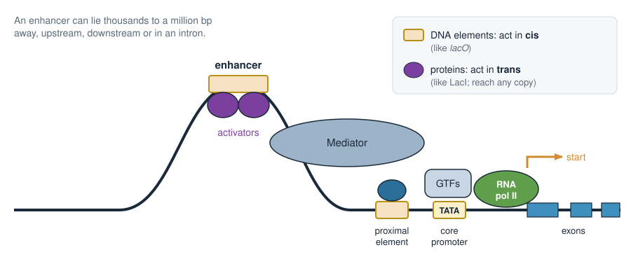
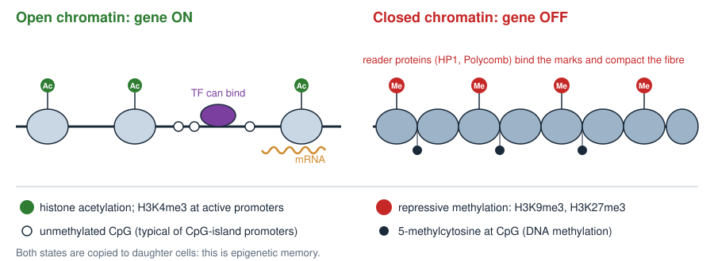
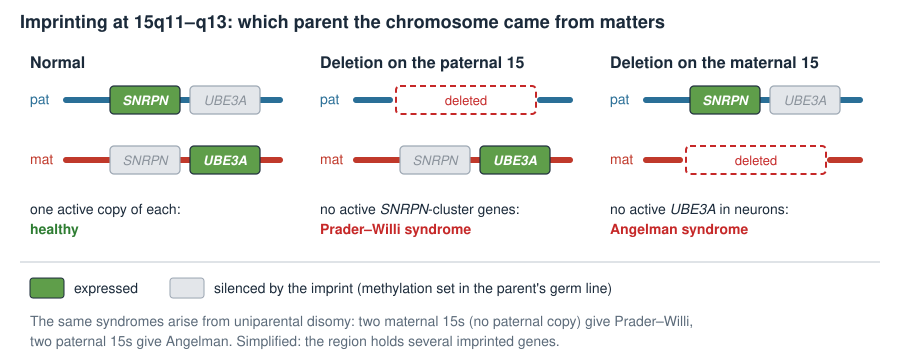
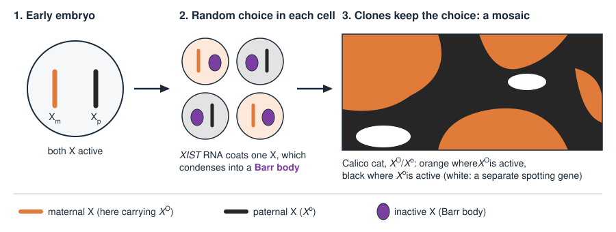
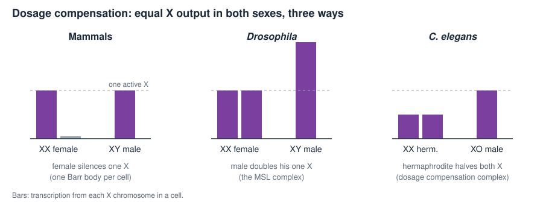

Part 6: Gene regulation & development. Enhancers, transcription factors, chromatin, imprinting and X inactivation
Basic and molecular genetics (5MO104)
About this lecture
Every cell in your body has the same genome, yet a liver cell makes albumin and a red-cell precursor makes haemoglobin. The difference is regulation. Eukaryotes use the same cis/trans logic as the lac operon, plus a layer that bacteria lack: chromatin, whose states can be copied from cell to cell without any change in the DNA sequence.
Promoters, enhancers and transcription factors; motifs; regulatory mutations.
Chromatin and epigenetics: histone modification, DNA methylation, position-effect variegation.
Genomic imprinting: Prader–Willi and Angelman syndromes.
X inactivation: XIST, the Lyon hypothesis, calico cats, mosaicism and skewing.
Dosage compensation in flies and worms.
Book: Hartwell, Genetics: From Genes to Genomes, the chapter on gene regulation in eukaryotes.
What is different in eukaryotes?
Bacteria (lac)
Eukaryotes
Unit of transcription
operons: several genes, one mRNA
usually one gene, one promoter
DNA packaging
nearly naked DNA
chromatin: DNA wrapped on nucleosomes
Typical control
repressor blocks polymerase
activators recruit polymerase; default is often “off”
Regulatory DNA
operator next to the promoter
enhancers up to ~1 Mb away, combined with promoter elements
Signals
a few regulators per operon
many transcription factors in combination
Coupling
transcription and translation coupled
separated by the nuclear envelope; splicing, export
Memory
lost when the signal goes
chromatin states can be inherited through mitosis
Promoters, enhancers and transcription factors

Core promoter (e.g. TATA box): where general transcription factors (GTFs) and RNA polymerase II assemble.
Proximal elements and enhancers: binding sites for activators (or repressors). Enhancers work at a distance, in either orientation; the DNA loops, and Mediator links them to the polymerase.
In lac terms: enhancers and promoters are cis-acting sites (like lacO); transcription factors are trans-acting proteins (like LacI).
Transcription factors and their motifs
A transcription factor has a DNA-binding domain that recognises a short motif (6–12 bp), and an activation (or repression) domain that recruits co-factors.
Motifs are degenerate: GATA1 binds (A/T)GATA(A/G); SOX2 binds ACAATG-like sites. A position weight matrix gives the probability of each base at each position; a sequence logo draws it.
A 6-bp motif turns up by chance about every 46 = 4096 bp, so a genome has hundreds of thousands of copies. Combinations of factors, chromatin and spacing decide which sites matter.
Combinatorial control: a few hundred to a couple of thousand factors, used in combinations, specify many cell types.
JASPAR is the open database of such motifs. You will look up GATA1 and SOX2 in the exercise.
Regulatory mutations: same protein, different place or time
A mutation in a cis-regulatory element changes where or when a gene is expressed, not the protein it makes.
Example
Mutation
Effect
Lactase persistence
−13910 C>T, in an intron of MCM6, ~14 kb upstream of LCT
enhancer stays active in adult gut: lactase made after weaning (dominant)
Preaxial polydactyly
point mutations in the ZRS enhancer, ~1 Mb from SHH
SHH switched on in the wrong part of the limb bud: extra thumb or toe
Fly wing spots (yellow)
gains and losses of enhancer sites between Drosophila species
Genetic signature: cis-acting (affects only the allele on the same chromosome), often tissue-specific, and often dominant.
Chromatin: open and closed

Histone acetylation loosens chromatin; acetyl groups are added by HATs and removed by HDACs. H3K4me3 marks active promoters.
H3K9me3 and H3K27me3 mark silent chromatin. Reader proteins (HP1, Polycomb) bind them and compact the fibre.
Transcription factors recruit the enzymes that write these marks, so chromatin states follow, and then stabilise, regulatory decisions.
DNA methylation and epigenetic memory
In mammals, cytosines in CpG dinucleotides can be methylated (5-methylcytosine). Methylated CpG islands at promoters keep genes silent.
After replication, each CpG is hemi-methylated (old strand methylated, new strand not). The maintenance enzyme DNMT1 recognises this and methylates the new strand: the pattern is copied.
De novo methyltransferases (DNMT3A/B) set new patterns, for example in the germ line.
Epigenetics: heritable changes in gene expression, through cell division (and sometimes across generations), without a change in DNA sequence.
Genetic evidence: Drosophilaposition-effect variegation. An inversion that puts white+ next to heterochromatin gives eyes with red and white patches. The DNA of white+ is unchanged; heterochromatin spreads into it in some cells and not others, and each cell’s descendants keep the state.
Genomic imprinting
For a few hundred genes in mammals, only the copy from one parent is expressed. The other is silenced by methylation set in the parent’s germ line, and the imprint is reset each generation.

The same deletion in 15q11–q13 gives Prader–Willi syndrome if it is on the paternal chromosome and Angelman syndrome if it is on the maternal one.
Imprinting in a pedigree
For a gene expressed only from the maternal allele (like UBE3A in neurons):
A child is affected only if the mutation comes from the mother.
A man carrying the mutation is unaffected (if he got it from his father) and passes it on silently: his children are unaffected carriers, but his daughters’ children have a ½ risk.
So the trait seems to skip generations, then appear in every child of carrier women at a ½ risk.
The allele is transmitted by normal Mendelian segregation; only its expression depends on the parent of origin.
X inactivation: the Lyon hypothesis

Mary Lyon (1961): in female mammals, one X in each cell is inactivated early in development, the choice is random, and it is kept in all descendant cells. The inactive X is the Barr body; it is coated by the long non-coding RNA XIST (from the X-inactivation centre, Xq13).
Consequences of X inactivation
Every female is a mosaic for X-linked genes. Heterozygous women for X-linked recessive conditions have patches of normal and mutant cells; e.g. in anhidrotic ectodermal dysplasia carriers have patches of skin without sweat glands.
Calico and tortoiseshell cats are almost always female: they need two X alleles (XO and Xo). A male calico is usually XXY.
Number of Barr bodies = number of X − 1: XX and XXY have one; X0 (Turner) has none; XXX has two. That is why X aneuploidy is far less severe than autosomal aneuploidy (Part 5).
Some genes escape inactivation (e.g. in the pseudoautosomal regions), which is why X0 and XXY are not normal.
Skewed X inactivation
On average, half the cells use the maternal X. But the choice is made in a small number of progenitor cells, so one female can be far from 50 : 50 by chance, like getting 7 heads in 8 coin tosses.
Skewed X inactivation: ≥ 80 : 20 (some studies use 90 : 10) in a tissue.
Causes: chance (few progenitors), selection against cells that use a harmful X, or mutations in the X-inactivation centre.
Consequence: a heterozygous carrier of an X-linked recessive disease can be affected if most of her cells use the mutant X: a manifesting carrier (e.g. of Duchenne muscular dystrophy or haemophilia A).
Monozygotic female twins can differ for an X-linked trait if their X inactivation differs.
Try it: an X-inactivation mosaic
Dosage compensation in other species

The problem is the same everywhere: one sex has two X chromosomes and the other has one. The solutions differ: inactivate one X (mammals), double the single X (Drosophila males, the MSL complex), or halve both X (C. elegans hermaphrodites). Mutations that break dosage compensation are sex-specific lethals, e.g. msl mutations kill Drosophila males but not females.
Seeing it in data: XIST in GTEx
The GTEx project measured RNA in 54 tissues from about 950 deceased donors. XIST is a clean test of what you just learned:
In women, XIST is expressed in every tissue (from the inactive X); in men it is essentially absent.
A Y-linked gene such as RPS4Y1 shows the opposite pattern.
Careful: GTEx’s default summary is the median over all samples. Most tissues have about twice as many male as female samples, so the pooled median of XIST is the male value, close to 0, everywhere except female-only tissues.
You will see this in the exercise and pull the per-sex data in R.
Summary
Concept
Key fact
Promoter, enhancer
cis-acting DNA; enhancers act at a distance via looping and Mediator
Transcription factor
trans-acting protein; binds a short, degenerate motif (GATA1: WGATAR)
Regulatory mutation
changes where/when, not what; cis-acting, often tissue-specific, often dominant
5mC at CpG; DNMT1 copies the pattern after replication
Epigenetics
heritable expression state without sequence change; e.g. position-effect variegation
Imprinting
parent-of-origin expression; 15q11–q13: PWS (paternal loss), AS (maternal loss)
X inactivation
one X per cell, random, clonal; XIST; Barr bodies = X − 1
Skewing
chance (few progenitors) or selection; manifesting carriers
Dosage compensation
mammals: inactivate; flies: double in males; worms: halve in hermaphrodites
Where this leads
Next: RNA-mediated regulation.XIST is a long non-coding RNA. The next unit adds microRNAs and RNAi, a second layer of control after transcription.
Development & model organisms. Transcription-factor cascades (gap, pair-rule, Hox genes) and chromatin memory (Polycomb keeps Hox genes off) build the body plan.
Part 7: Complex traits. Most GWAS signals lie in non-coding, regulatory DNA.